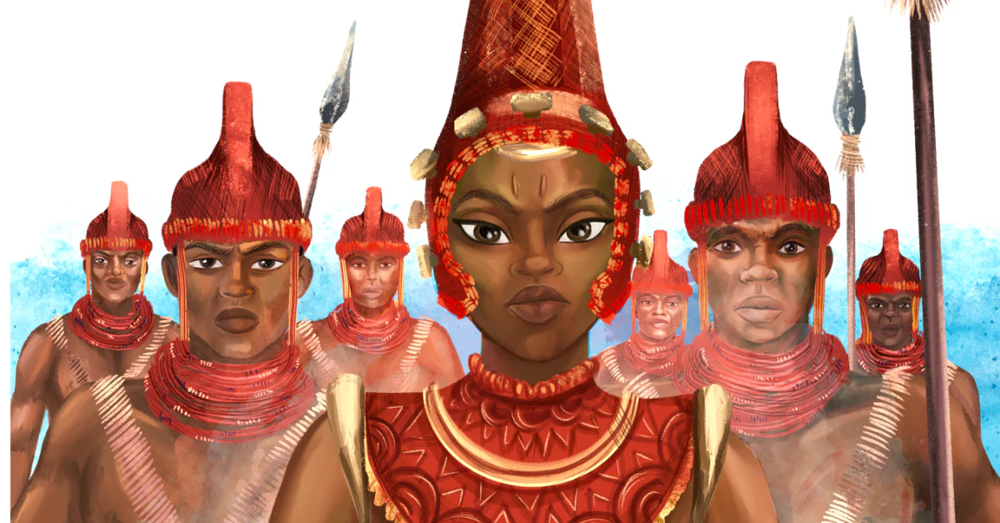

About This Project
Learn about the researcher behind this site and the course it was created for.
About the Researcher

Carrington Uchi
Major: Information Technology
University: Kennesaw State University
Course: IT 3203 — Web Development, Fall 2025
I am an IT student at KSU with a strong interest in web development and digital media. I chose the topic of West African traditional foods because of its rich cultural depth and its underrepresented presence in academic web resources. This project gave me the opportunity to combine my interest in technology with a subject that connects food, history, and global culture.
Skills & Experience
| Skill / Area | Level | Notes |
|---|---|---|
| HTML5 | Intermediate | Semantic markup, forms, tables, accessibility |
| CSS3 | Intermediate | Flexbox, Grid, custom properties, transitions |
| JavaScript | Beginner–Intermediate | DOM manipulation, events, form validation |
| GitHub / Git | Beginner | Version control, GitHub Pages deployment |
| Web Research | Intermediate | Academic sources, fact-checking, citation |
About This Project
This website was created as part of the IT 3203 Web Development course at Kennesaw State University, Fall 2025. The project is completed across three milestones:
- Milestone 1: Build the basic site structure using HTML and CSS — six pages, consistent design, valid markup.
- Milestone 2: Add a client-side JavaScript quiz application to test user knowledge of West African foods.
- Milestone 3: Make the site fully responsive for mobile devices using responsive web design techniques.
The research topic — West African Traditional Foods — was chosen to highlight a culinary tradition that is globally significant yet often overlooked in mainstream web resources. The goal is to create a well-researched, professionally designed reference site that does justice to the richness of this subject.
Contact
For questions about this project, please fill out the form below.